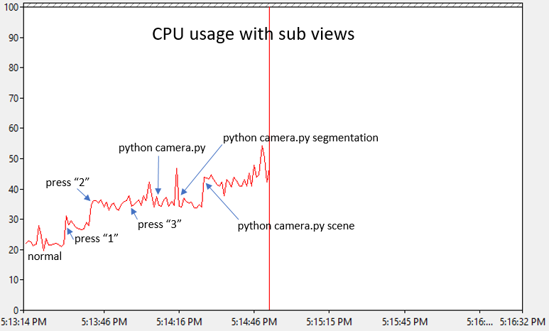

相机视角
屏幕上显示的相机视图是您可以通过 simGetImages API 获取的相机视图。

从左到右依次为深度视图、分割视图和FPV视图。有关各种可用视图的说明，请参阅 图像 API 。
开启/关闭视图
按下 F1 键可查看用于开启/关闭任意或所有视图的快捷键。您还可以在此处选择各种视图模式，例如“与我一起飞行(Fly with Me)”模式、第一人称主视角(First Person View, FPV)模式和“地面视角(Ground View)”模式。
手动相机控制
按下 M 键即可切换到手动相机控制模式。在手动相机控制模式下，您可以使用以下按键控制相机：
| 键盘 | 动作 |
|---|---|
| Arrow keys | 前后左右移动相机 |
| Page up/down | 上下移动相机 |
| W/A/S/D | 控制俯仰角上下移动和偏航角左右移动 |
| Left shift | 提高移动速度 |
| Left control | 降低移动速度 |
配置子窗口
现在您可以选择上述每个子窗口显示的内容。例如，您可以选择在第一个窗口中显示表面法线（而不是深度信息），在第二个窗口中显示视差（而不是分割信息）。以下是您可以在 settings.json 文件中使用的设置值：
{
"SubWindows": [
{"WindowID": 1, "CameraName": "0", "ImageType": 5, "VehicleName": "", "Visible": false},
{"WindowID": 2, "CameraName": "0", "ImageType": 3, "VehicleName": "", "Visible": false}
]
}
性能影响
注意：本部分内容已过时，尚未更新以反映新的性能提升变化。
渲染这些视图确实会影响游戏的帧率，因为这会增加 GPU 的负担。以下显示了打开这些视图时对帧率的影响。

这是在一台配备 Intel Core i7 处理器、32GB 内存和 GeForce GTX 1080 显卡的计算机上测试的，运行的是 Modular Neighborhood 地图，使用了预设的调试信息，没有打开任何调试器或游戏编辑器。在未打开任何子视图的正常状态下，帧延迟约为 16 毫秒/帧，这意味着它可以稳定地保持 60 FPS（目标帧率）。当帧延迟上升到 35 毫秒时，帧率下降到 28 帧/秒左右；当帧延迟飙升到 40 毫秒时，帧率会略微下降到 25 帧/秒。
即使在最糟糕的情况下，模拟器仍然可以正常运行并正常飞行，因为物理引擎与渲染是解耦的。但是，如果延迟过高，导致CPU过载而中断与PX4硬件的通信，则飞行可能会因外部控制信息超时而停止。
在进行测量的计算机上，无人机可以毫无问题地执行 path.py 程序，所有视图都打开，并且同时运行 3 个 Python 脚本来捕获每种视图类型。飞行过程中出现了一次失速，但它平稳地恢复并完成了飞行路径。因此，它的性能刚好接近极限。
下面显示了对 CPU 的影响，或许有点出乎意料，CPU 的影响也不小。
